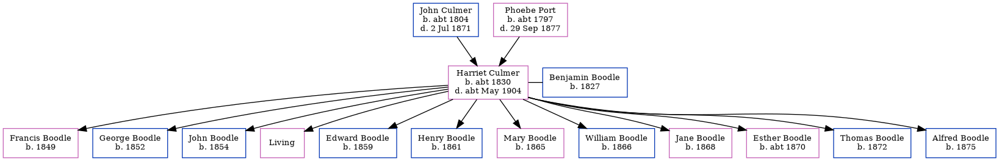

Harriet Boodle (née Culmer) c1830 - c1904
[ Home ] | [ Calendar ] | [ Surnames Index ] | [ Errors ] | [ Family History ]The child of John Culmer (an agricultural labourer) and Phoebe Port, Harriet Culmer, the three times great-aunt of Nigel Horne, was born in Hoath, Kent, England c. 18301,2, was baptised there on 31 Oct 1830 and married Benjamin Boodle (an agricultural labourer with whom she had 12 children: Francis, George, John, Ann, Edward, Henry, Mary, William, Jane, Esther, Thomas and Alfred, along with 1 surviving child) at Ss Cosmus & Damian's Church, Blean, Kent, England on 29 Oct 18484.
During her life, she was living at Clapham Hill in Blean on 30 Mar 18511; at New Road in Blean on 7 Apr 18615 (when she was living with her); on Fordwich Lane, Canterbury, Kent on 2 Apr 18716; in Blean on 3 Apr 18817 (the same place as her parents had been living on 6 Jun 1841); and at Plough Row, Harbledown, Kent on 31 Mar 19012.
She died c. May 1904 in Bridge, Kent, England3.
Parents
- John was born c. 1804
- Phoebe was born c. 1797
Children
- Francis was born in 1849
- George was born in 1852
- John was born in 1854
- Edward was born in 1859
- Henry was born in 1861
- Mary was born in 1865
- William was born in 1866
- Jane was born in 1868
- Esther was born c. 1870
- Thomas was born in 1872
- Alfred was born in 1875
Citations
- 1851 England, Wales & Scotland Census - Findmypast (was age 21 and the wife of the head of the household)
- 1901 England, Wales & Scotland Census - Findmypast (was age 72 and the mother-in-law of the head of the household)
- England & Wales deaths 1837-2007 - Findmypast
- Kent, Canterbury Archdeaconry marriages 1538-1928 - Findmypast
- 1861 England, Wales & Scotland Census - Findmypast (was age 31 and the wife of the head of the household)
- 1871 England, Wales & Scotland Census - Findmypast (was age 42 and the wife of the head of the household)
- 1881 England, Wales & Scotland Census - Findmypast (was age 52 and the wife of the head of the household)
Media
England & Wales deaths 1837-2007 - BMD/D/1904/2/AZ/000034/050
England & Wales marriages 1837-2005 - BMD/M/1848/4/AM/000483/002
Kent, Canterbury Archdeaconry marriages 1538-1928 - GBPRS/CANT/M/97034182/2
1851 England, Wales & Scotland Census Transcription - GBC-1851-0005826129
1881 England, Wales & Scotland Census - GBC/1881/0004741624
1871 England, Wales & Scotland Census Transcription - GBC-1871-0014176265
1901 England, Wales & Scotland Census Transcription - GBC-1901-0005462971
Family Tree
Map
Generated by ged2site. Last updated on Jul 3, 2024
Known Issues
Listed in the residence for 31 Mar 1901, but spouse Benjamin Boodle is not
Census information missing between Census UK 1881 and Census UK 1901